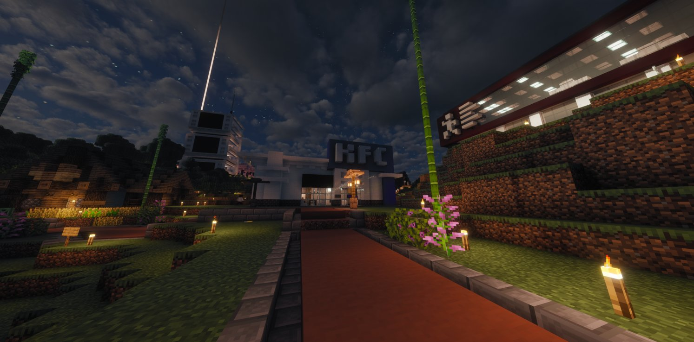
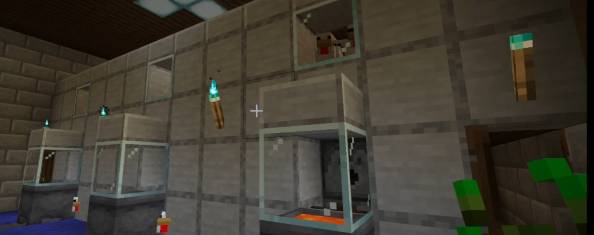
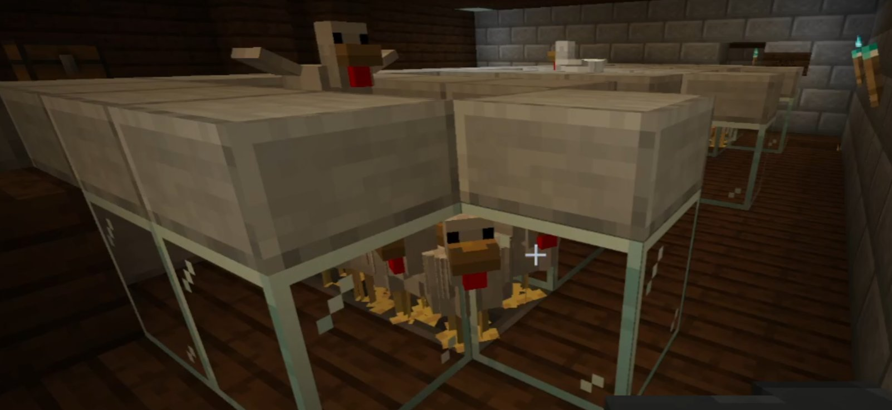

KFC au cœur des accusations : élevage intensif, empoisonnement et hygiène contestée
Plusieurs accusations graves visent le KFC de Karminéa : élevage aux conditions jugées excessives, non-respect des normes d'hygiène, et — plus grave encore — des produits liés à un possible empoisonnement.

Le Karmine Déchaîné s'intéresse aujourd'hui à une affaire qui inquiète les consommateurs : plusieurs accusations visent le KFC, soupçonné de recourir à un élevage intensif, de ne pas respecter les normes d'hygiène et, plus grave encore, d'avoir mis en circulation des produits liés à un possible empoisonnement.
Des pratiques dénoncées
Selon les informations qui circulent, le KFC ferait l'objet de critiques sérieuses concernant ses méthodes de production. L'élevage intensif est pointé du doigt pour ses conditions jugées excessives, tandis que le respect des règles d'hygiène serait loin de faire l'unanimité. Ces accusations, si elles venaient à être confirmées, poseraient de vraies questions sur la sécurité et la qualité des produits proposés aux citoyens.
Une affaire qui interroge
L'hypothèse d'un empoisonnement donne une dimension encore plus grave à ce dossier. À ce stade, le Karmine Déchaîné rappelle qu'il faut distinguer les rumeurs, les témoignages et les faits établis. Mais une chose est certaine : lorsqu'un commerce alimentaire est soupçonné de négliger l'hygiène, la confiance du public s'effondre très vite.


Ce qu'il faut retenir
Cette affaire met en lumière trois problèmes majeurs :
- L'élevage intensif, critiqué pour ses conditions.
- Le non-respect des normes d'hygiène, qui alimente la méfiance.
- Le soupçon d'empoisonnement, qui rend l'affaire particulièrement grave.
Le Karmine Déchaîné suivra ce dossier de près. Dans un territoire où la confiance entre commerçants et citoyens reste essentielle, la transparence n'est pas une option.
"Quand la nourriture soulève des doutes, c'est toute la table qui vacille."
— La Rédaction